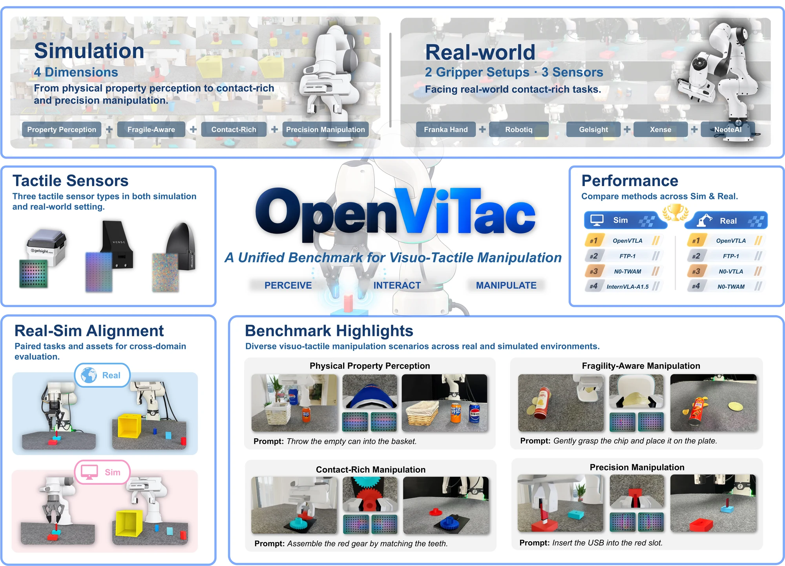
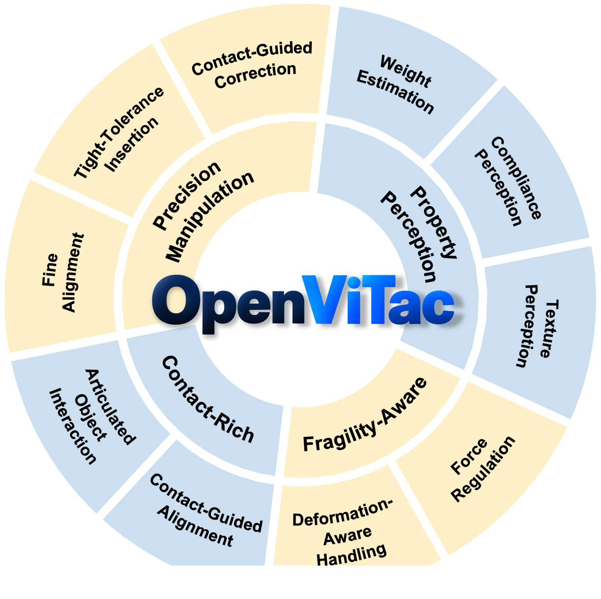
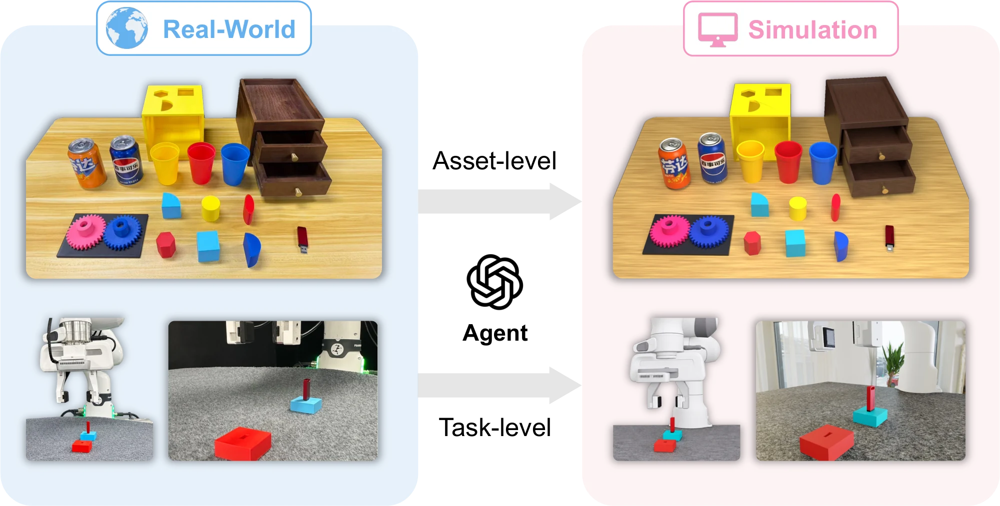
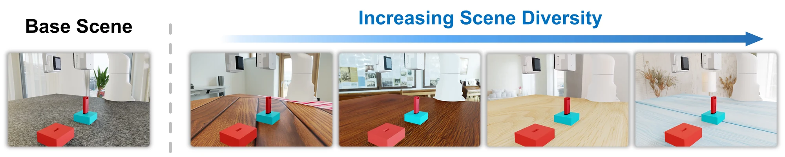
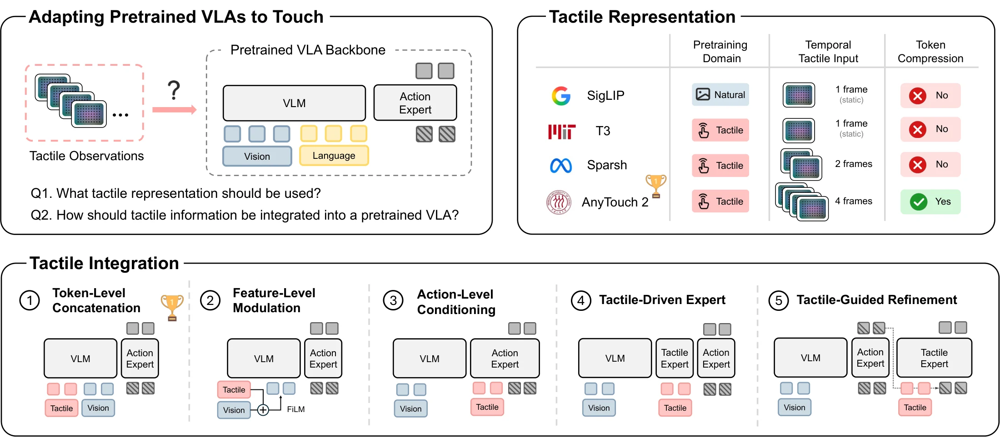
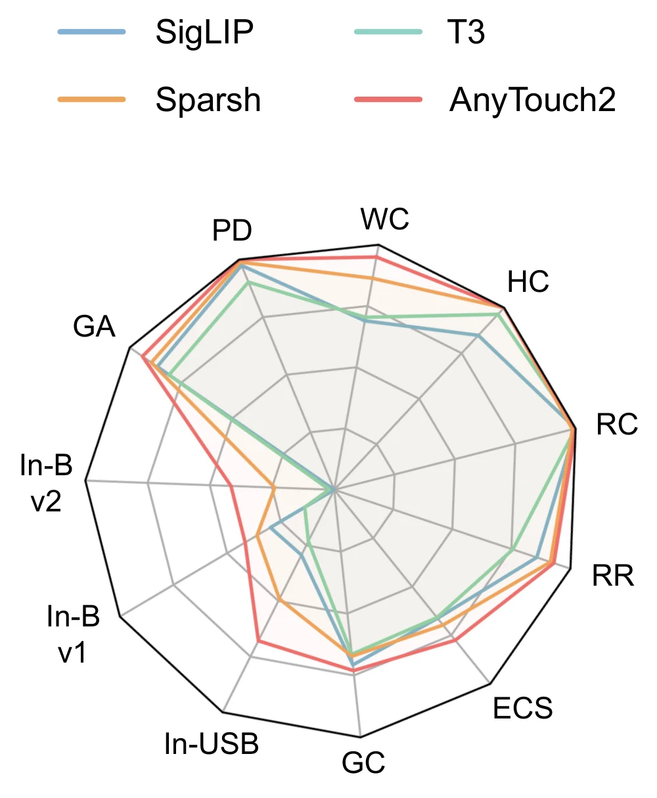

A unified benchmark for robots that see and feel
OpenViTac
Learning and Benchmarking Visuo-Tactile Policies
in a Unified Sim-and-Real Framework
* Equal contribution † Project leaders ‡ Corresponding authors

Beyond what vision can tell.
Weight, texture, fragility, and contact are often hidden from a camera. OpenViTac brings these physical challenges into a unified benchmark, with corresponding simulation and real-world tasks for evaluating vision-language-action, world-action, and vision-tactile-language-action policies.
Alongside the benchmark, we introduce OpenVTLA: a practical way to adapt pretrained VLA models to touch, and study how simulated experience can improve real-world manipulation.
- Simulation tasks
- 11
- Paired real-world tasks
- 8
- Tactile capabilities
- 4
- Tactile sensor types
- 3
Put touch to the test.
From recognizing an object's physical properties to making a precise insertion, each task isolates a reason to feel.
See the complete capability taxonomy

From the real world, into simulation.
Aligned objects, scenes, and task configurations connect virtual evaluation with physical manipulation.

Corresponding tasks
Eight shared tasks support comparison under matched manipulation objectives in simulation and on real hardware.
Diverse environments
Backgrounds, workspace appearance, and surrounding context vary while the underlying task configuration stays consistent.

Introducing OpenVTLA
Give a pretrained VLA a sense of touch.
A temporally aware tactile encoder. Early token-level integration. The original vision-language and action pathway.

Temporal touch, integrated early.
OpenVTLA uses AnyTouch2 to encode tactile history into compact tokens. These tokens are projected to the VLM hidden dimension and prepended to the visual sequence of π0.5.
Token-level concatenation lets touch participate from the VLM input, without an additional fusion module or tactile-specific expert.
- Tactile representations studied
- 4
- Integration strategies studied
- 5

Evaluate in sim. Validate in reality.
OpenVTLA achieves the highest average success rate among the evaluated policies in both domains.
OpenVTLA in simulation
OpenVTLA on real hardware
Sim-real Pearson correlation
Success rates (%). Average is the unweighted mean across tasks. All policies use single-task training. Full task names are available in the column headings.
Simulation makes real data go further.
With 100 real demonstrations per task, adding 500 simulated demonstrations raises OpenVTLA's average success by 15 percentage points across USB insertion and gear assembly.
| Training data | Insert USB | Gear assembly |
|---|---|---|
| 100 real | 20 | 50 |
| 100 real + 500 sim | 40 | 60 |
Citation
If you find OpenViTac useful for your research, please consider citing this work.
Preliminary citation. Publication details will be added with the paper release.
@misc{wu2026openvitac,
title={OpenViTac: Learning and Benchmarking Visuo-Tactile
Policies in a Unified Sim-and-Real Framework},
author={Wu, Yifan and Li, Qin and Min, Nan and Zhong, Guojin
and Zhao, Haoyu and Li, Zhiyuan and Xu, Houze
and Xu, Shengqi and Lin, Xingyao and Diao, Zijie
and Liu, Zhaoxiang and Lian, Shiguo and Lu, Shunlin
and Zhao, Shihao and Ye, Ziyi and Wu, Zuxuan
and Jiang, Yu-Gang},
year={2026}
}